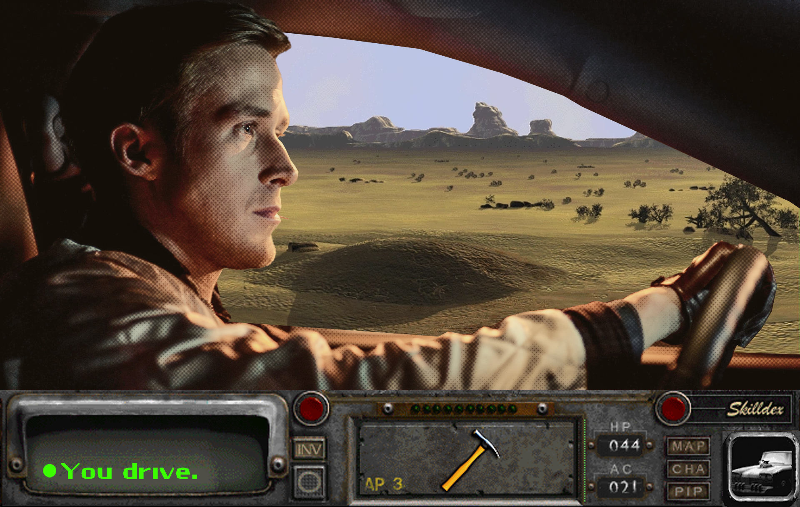

Acerca de mí
Hola, soy quien dibuja y mantiene este cuaderno. Empecé a publicar acá para tener un lugar propio donde mostrar mis trabajos sin depender de redes sociales: caricaturas hechas por encargo, paisajes que dibujo para relajarme y algunos experimentos en estilo animé.
Cada dibujo lo escaneo o exporto como PNG y lo subo directamente
a la carpeta imagenes/ de este sitio, que está
construido solo con HTML y CSS, sin frameworks ni scripts.
Si querés encargar un dibujo o simplemente saludar, podés escribirme desde la página de contacto.